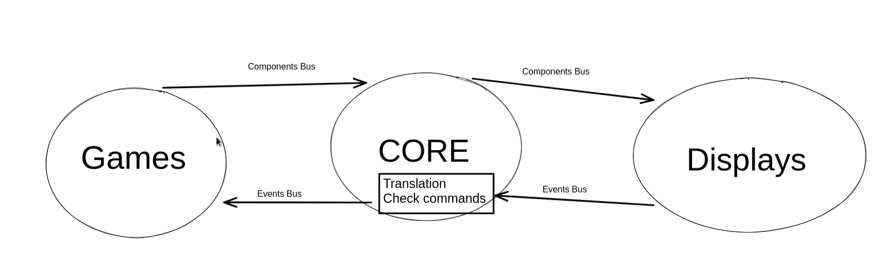

Arcade
Welcome to our Arcade documentation!
Arcade is a c++ project made in our second year in Epitech. The Project consists to creating a fully functionnal arcade with some special features, the main one is to be able to dynamicaly change the graphical library used to render the game or to swap games on the go. We have to this without the game having the knowledge of which graphical library is being used, or else it would have been to easy.
Thus there is three parts to this project:
The games: they are arcade games (snake, pacman…) that should only conatin the game loop and says what should be displayed and where.
The graphical libraries: they are the ones that with the information renders everything and actualy displays stuff on screen.
The core: it is the part that ties the other two together, it is the manager of the dynamic libraries and the one who sends the information from one part to the other.
To get this ecosystem to work, we implemented abstract interfaces so all parts can easily communicate information and use them.
Schema
Represents the general loop of the arcade
We suggest you to read the pages dedicated to each part: Core, Games, Displays, Events & Components
Warning
Don’t underestimate the difficulty of the project only by seeing this page.